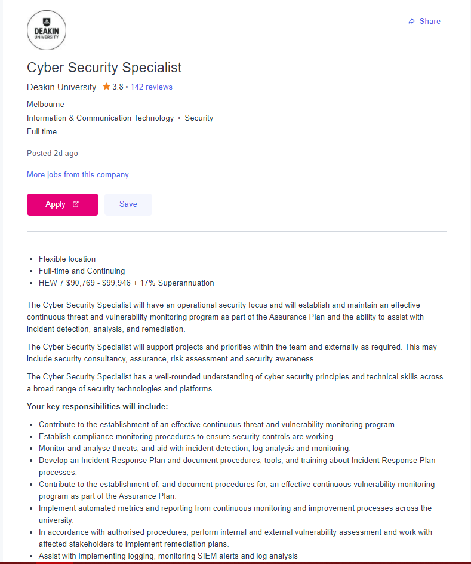
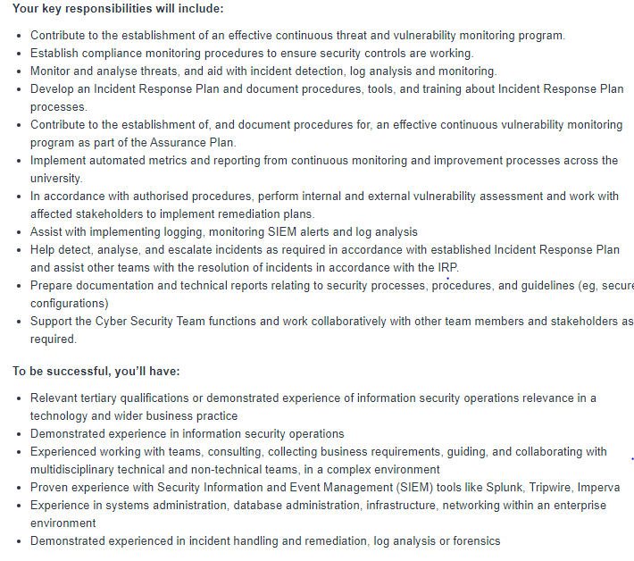

Assignment 1
Assignment 1
My name is James Humphry (s3949637), my email is s3949637@student.rmit.edu.au. I have successfully completed VCE and am currently studying a Bachelor of Information Technology at RMIT. I am a native English speaker and can speak a very small amount of French due to learning it at school. I am an avid reader of light novels and I play a lot of video games, specifically role-playing games but I do play other things sometimes.
IT INTEREST
My Interest in IT started in Middle School, but even before that I liked computers and using them and growing up with them has intensified the interest into wanting to know on how to make them and how they work, as well as with the ever-expanding industry providing ample opportunity to get a job and grow, My interest in IT was further sparked by my Dad who is a Change Manager and although not entirely IT related deals heavily with the IT industry and things involved, and his encouragement to look into the industry. My experience in IT started with learning basic HTML and then going into Scratch, during VCE I did Units 1 and 2 for IT and Units 3 and 4 for Software Development. I’m currently learning Python in my course at Uni which I find fun and interesting. I chose RMIT due to recommendations from Friends and Family and having heard good things about the STEM courses. I expect to learn a plethora of things from RMIT such as coding, cloud and further exploring subjects like User-centred Design.
IDEAL JOB
My Ideal Job is a Cyber Security Specialist for a company such as Deakin University
 

A Cyber Security Specialist is a job in which you focus on improving and maintaining the security and safety of data and information held by the company while noting any issues and dealing with them before they can happen. This includes internal and external threats to any cyber related issues such as phishing and hackings to loopholes in software or hardware.
To become a Cyber Security Specialist, I will need experience or qualifications to handle information security operations, Experience with SIEM tools such as Splunk, Tripwire, Devo, etc. I would also require experience with system and data administration and networking within enterprise environments, as well as experience dealing with incident handling and remediation, log analysis or forensics. To work at places like Deakin University I would also need a valid Working with Children permit.
My current skills are inadequate for such a job as I have very little experience within the IT industry aside from basic programming and what I’m currently learning at Uni. I have very basic knowledge on SIEM tools but not enough to use it in a work environment.
To acquire the skills necessary for the job, I plan to finish the bachelor of IT I’m doing currently and hopefully be employed to work within the IT industry and slowly acquire the skills required like incident handling and data administration, Through University, I’m also hoping to improve my social skills through co-operation with other throughout my time studying which will greatly help my future within the industry.
PERSONAL TESTS
Myer Briggs – Logician Introverted – 84%, Intuitive – 52%, Thinking – 54%, Prospecting – 54%, Turbulent – 72%,
Role: Analyst.
Strategy: Constant Improvement.


A logician is someone who thinks a lot but is also prone to overthinking, but are also usually introverted, they sometimes play devil’s advocate to continue interesting conversations. In a team, I may not be able to communicate very well with others however, I would do my best to help and do what is needed of me, when forming a team, I would need to look for people who are ok with me being slightly disconnected but also someone who is good at taking the lead as I struggle to do myself.
Learning Style Test – Visual – 40%, Auditory – 40%, Tactile, 20%

An Auditory/Visual learner is someone who learns through looking and hearing, they understand and learn better when they can see and hear what they are learning, they read and speak content to learn it as well as visualise it. In a team this would help others who are of different learning styles mesh and comprehend information quicker which would speed up the process. I would look for people with differing learning styles to help collate information and help people learn it quicker.
Big 5 Personality Test – Neuroticism – 88(High), Extraversion – 45(Low), Openness to Experience – 74(High), Agreeableness – 84(High), Conscientiousness – 72(Neutral)

Neuroticism is the tendency to experience negative feelings, it is made up of Anxiety, Anger, Depression, Self-Consciousness, Immoderation and Vulnerability, a high value means that people would be more prone to these feeling though this doesn’t mean they are prone to all of them, such as anger or immoderation, while a low value means the person would be more self-confident and less prone to such feelings.
Extraversion is the ‘pronounced engagement with the external world’, It is made up of Friendliness, Gregariousness, Assertiveness, Activity Level, Excitement Seeking and Cheerfulness, This determines how people respond and engage with people and the world around them, a high value means they are very sociable and outgoing, or cheerful and thrill-seeking, while a low value would mean they are quiet and prefer places that lack excitement or are unable or unwilling to take charge
Openness to Experience describes how imaginative, creative or down-to-earth conventional people are, It is defined by Imagination, Artistic Interests, Emotionality, Adventurousness, Intellect and Liberalism. A high value can mean that they are imaginative or adventurous or are emotionally aware of themselves or others, while a low value can mean they are less aware of their emotions, lack imagination or fall in line with convention or are more prone to.
Agreeableness reflects an individual’s concerns with cooperation and social harmony, It is made up of Trust, Morality, Altruism, Cooperation, Modesty and Sympathy. A person who scores high are more likely to be honest and fair, find helping others rewarding, dislike confrontation, modest or sympathetic, a low score would mean they find enjoyment in arguments, find helping tedious, arrogant, or even a compulsive liar.
Conscientiousness is how people control or regulate their impulses, attributes of conscientiousness are Self-Efficiency, Orderliness, Dutifulness, Achievement Striving, Self-discipline, and Cautiousness. A high scoring person will have self-control, be organised, have a good sense of moral obligation, strive for success, be cautious, etc. While a low scorer, will be unreliable, lazy, disorganised and are may not have control of their lives or at least feel like they don’t.’
The results would mean I would work well in some groups however I would struggle in others especially loud groups and those without a strong leader figure, I would have ok self-control and would be able to get my job done. When forming a forming a team I should focus on trying to take a bigger role to focus on improving my lack of extraversion.
PROJECT IDEA
My Project Idea is a Chatbot that can be used as a FAQ for a shopping website, that allows the users to ask questions and check on status of orders or suggest products based on specifications or tell new or upcoming products that may be released and help guide users to these pages. The Chatbot would have voice recognition commands such as “I would like to check my order” in which the bot would respond with information, asking for further specification if necessary.
The Motivation stems from a personal interest in chatbots and how they work, as well as the broad amount of uses they can have stemming from assistants to customer support. There also seems to be a large opportunity for such chatbot as websites such as Target (www.target.com.au) and EB-Games (https://www.ebgames.com.au) don’t have such technology. This would help users navigate such websites, get quick access to their orders, and would make use of the websites more efficient which could promote people using it.
The Project itself is a Chatbot for a shopping website such as Target and EB-Games. The Chatbot would include a FAQ section where users can ask the bot how to do various things such as check on their order’s status or get recommended products under specifications such as recent releases or product type or information. The bot would also be able to act as customer support or be able to contact customer support if the issue is beyond it. The Bot would be a transactional chatbot
, a chatbot with specific options already laid out as most issues could hopefully be anticipated and if not, they can be directed to call customer services, it would also make the recommendation process easier as the specifications would already be laid out and can be given tags already imbedded in the website such as ‘kitchenware’ then ‘blender’ or ‘PlayStation’ then ‘games’. It also removes the errors which could occur when the user’s message is being interpreted or responded to, such as the bot not recognising what the user is saying, It would also make any voice activation easier as it would have to learn an almost unlimited vocabulary or be subject to errors whereas it would have to learn fewer words and can focus more on various pronunciations of the words. Some issues the chatbot would have would be to make it easier to use than just using the websites menus. If poorly designed the bot could be more tedious at finding specific products, then if the user had used the website normally, this could be remedied by implementing a conversational chatbot mode which would allow the user to enter information instead of it being fixed options. This could allow people to search with more filters than what is available in the website normally such as searching for a specific game under a specific console without manually editing filters once its already searched. This could also work in other shopping websites and be more efficient than searching and filtering manually, and then scrolling through the multitudes of various items, when the chatbot could recommend the ‘best’ one, one with the best reviews or one with the most highest rating reviews to prevent a 5* blender that has one review beating the 4.9* blender with tens of 5* reviews, reducing the chance of a possible false review having an effect on users shopping for that item. The bot should also be able to answer ‘Frequently asked Questions’ or Issues the user is experiencing. If an issue is selected, the bot will provide fixes to frequent issues, and if it’s unable to then the user can select ‘none of these issues’ and will be sent to customer service who should be able to help the user through the issue.
Chatbots are software that are generally comprised of 7 components, they are:
Natural Language Processing, the ability to turn text and speech into understandable data for the machine, this is further categorized by Tokenisation, splitting words into smaller parts based on meaning, Normalisation, checking words for typos and correcting them, Entity Recognition, looking for keywords to identify topics, and Semantic Analysis, inferring meaning of a sentence by understanding each word.
Natural Language Understanding, which is recognising patterns in human speech, further categorised by Dictionary, determining meaning of words, Parser, to determine if the syntax conforms to the rules of language, and Grammar Rules, to break down the input based on sentence structure and punctuation
Knowledge Base, A library of information that the chatbot relies on to fetch the data used to respond to users. It will differ depending on business needs. For the above project it would be info on products and prices.
Data Storage, Store conversations for testing and training purposes
Dialog Manager, the component responsible for the flow of conversation between users and chatbots. It keeps a record of interactions in order to decide how to respond
Natural Language Generation, the process of transforming machine-produced structured data in readable text. There are multiple steps, Content Determination, filtering data in the knowledge base to choose what to include, Data interpretation, understanding the pattern and answers in the knowledge base, Document planning, structuring the answer in a narrative manner, Sentence Aggregation, compiling expressions and word for each sentence, Grammaticalization, applying Grammar rules and Language Implementations, Inputting data into language templates to ensure a natural response.
The Skills required for the creation of this project would be database management to produce the knowledge base and update the database to keep it up to date and functioning, there are online tools such as Collect.chat, HubSpot, etc (https://geekflare.com/create-chatbot/). that allow you to build the chatbot and will help with maintenance
The success of the project will result in a functional chatbot usable in multiple environments such as other websites. The chatbot could be used in a range of websites from video game stores to clothing to general purpose, maybe filling the gap in an open market which could help one competing store get an advantage over its competitors.